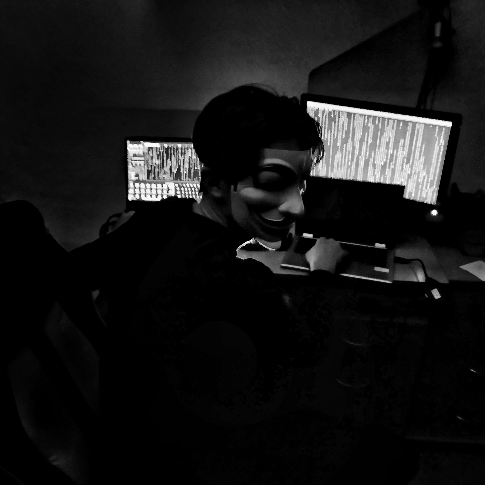
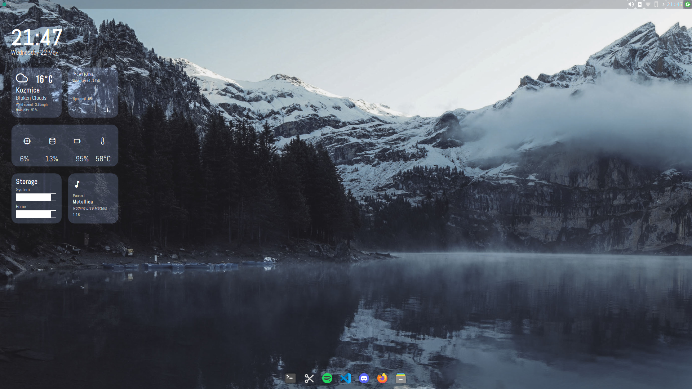
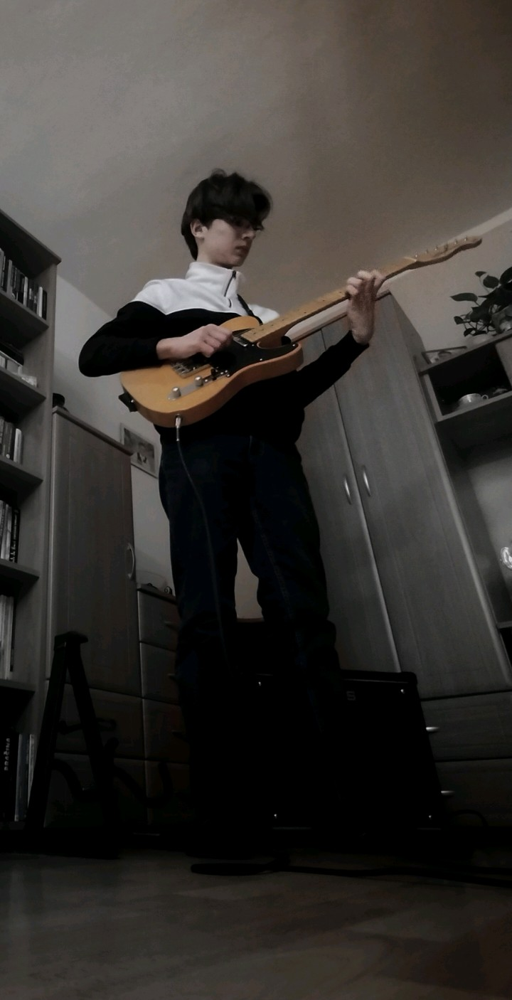
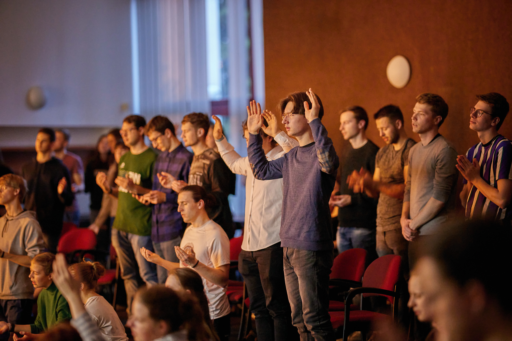

Informační Technologie
Celkem nečekaně spadají moje oblíbené koníčky do IT. Touha chápat technologii mě žene dopředu již dlouhou dobu.
Mezi hlavní zájmy v oboru IT u mě patří:
- Linux
- Programování desktopových aplikací
- Webové aplikace
- Elektrotechnika a robotika
- 3D modelling a 3D tisk
- Vývoj počítačových her
- Kvantové počítače
Linux
Díky jednomu skvělému učiteli informatiky a fyziky, který shodou okolností vedl kroužek 3D tisku, jsem dostal povědomý o Linuxu. Jemu mohu děkovat za vášeň k tomuto operačnímu systému.
Na jaře roku 2022 jsem provedl přechod na Linux a od té doby si nemůžu stěžovat na svoji volbu.
Funguji na distribuci Manjaro XFCE.
Kytara
Hudbu prostě miluji a jsem vášnivý kytarista, ale více o tomto se dočtete v sekci hudba
Víra
Jsem pevně věřící a praktikující křesťan katolík. Pocházím z křesťanské rodiny, ale víru jsem skoro opustil. Naštěstí si mě Bůh našel a ukázal mi jakou moc doopravdy má.
Aktuálně jsem účastníkem animátorského kurzu ve Staré Vsi nad Ondřejnicí, kde s úžasnými lidmi mohu prožívat skvělý čas, prohlubovat svoji víru a učit se nové věci.
Letní tábor SINAI je pro mne asi ta nejlepší událost celého roku, kdy na týden opouštím svoje pohodlí a žiji s lidmi, kteří se chtějí ve víře posunout.

Sport
Moje práce je dost sedavá a tak se snažím volný čas vyuižít i ke kompenzaci tady toho.
Mezi moje nejoblíbenější sporty patří:
- Běhání
- Kalistenika
- Inline bruslení
- Fotbal
- Basketbal